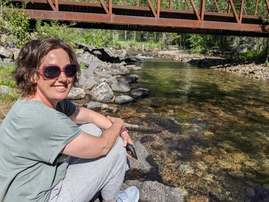

Mary Alice Briggs Design - About Me
Welcome to my Costume Design Portfolio! I'm Mary Alice Briggs, an experienced costume designer based in Rexburg, Idaho. I bring a unique blend of creativity and vison to every project.
As a young girl my exposure to theater began as my parents would take me to plays and musicals and we would watch recordings of musicals as a family. I grew to love the songs, the actors, the settings and the productions and they became part of my soul. As a college student I had the opportunity to do a study abroad in London. My experience included near daily experiences in the West End watching professional theater.
My journey came full circle as I became involved with my children's costumes throughout elementary school through high school. I once cut my son's thick red hair to create a matching beard for his "Brigham Young" character. My husband will tell you that I always have a strong opinon about the football uniforms worn each week as we watch our teams on TV. Those guys really need some costume help sometimes!
What inspires me? Each production is unique, and the actors, directors, set and ambiance all play a role for me. Rather than just copying what has been done before, I want to infuse each production with creativity, vision and practicality which balances tasteful design with frugality.
As I work with each actor, it's very important to me that they can
Some of my notable costuming projects include Into The Woods, Shrek, Peter and the Star Catcher and Suite Surrender. These experiences have not only challenged me as a designer but have also allowed me to collaborate with talented individuals who share my passion for the arts.
Outside of costume design, you might find me serving in the community. On various boards and committees I have planned and executed events large and small and have rallied a team of dedicated volunteers around a common goal. This has served me well when working with costumes on various productions.
I invite you now to explore my portfolio and get a glimpse into the world of costume design through my eyes. If you have any inquiries or would like to collaborate, feel free to reach out through my contact page.